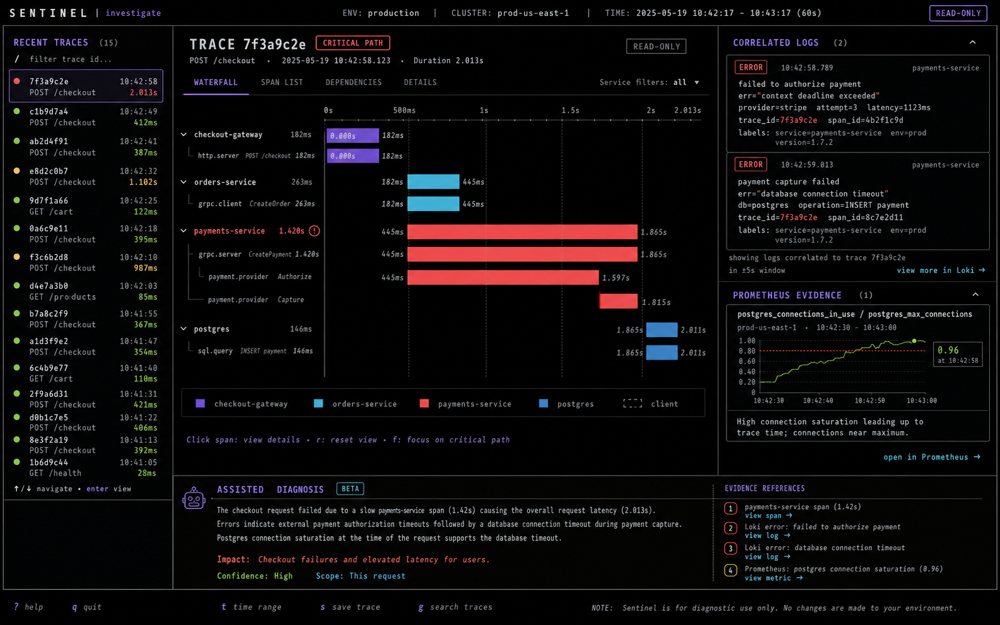
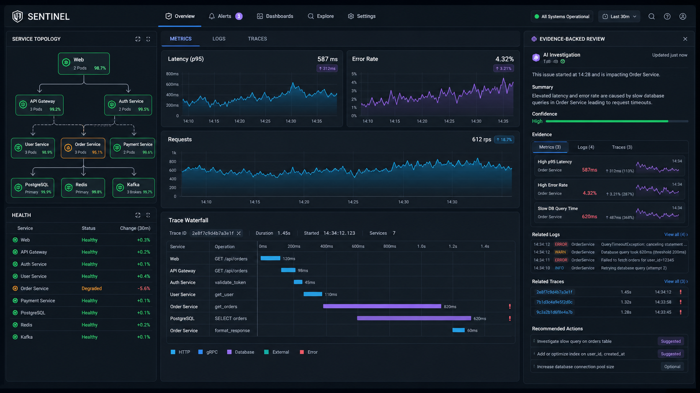
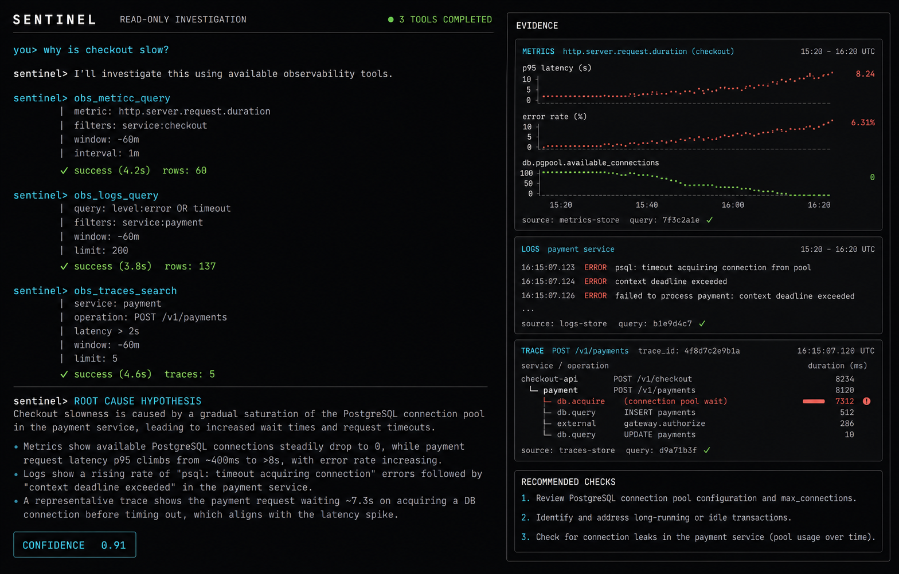
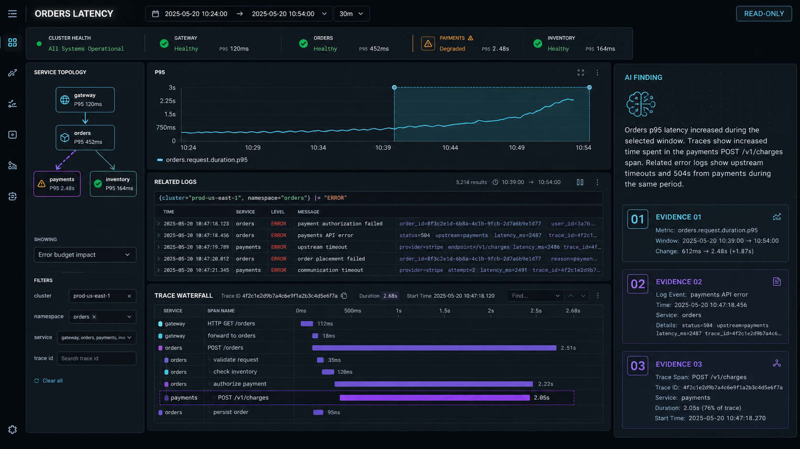
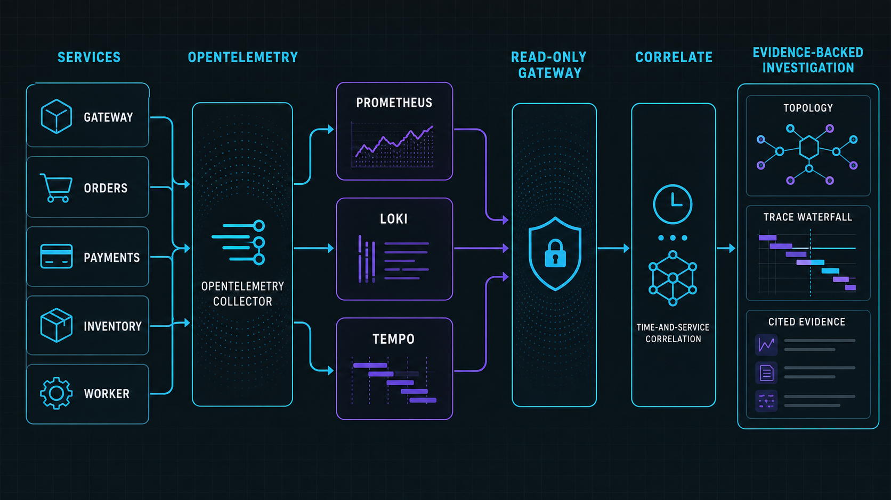
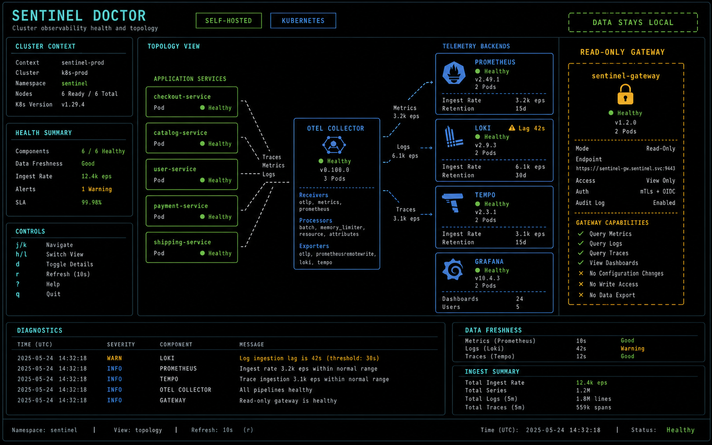
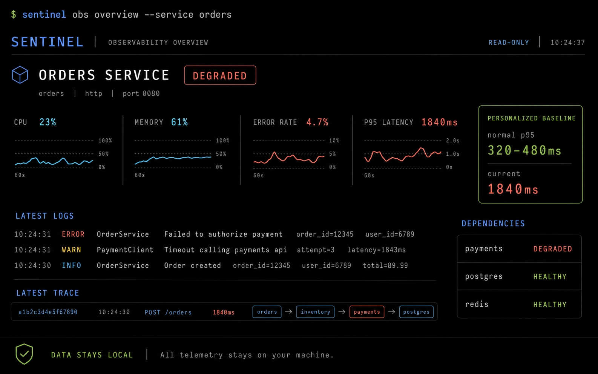

Araçlar arası kopukluk
Aynı arızanın CPU yükselişi, hata logu ve yavaş trace'i farklı ekranlarda ayrı ayrı kalır.
02 / Observability · AI · CLI-first
Metrik, log ve trace verisini şirketin kendi ortamında tutar; mühendislerin servis sağlığını anlamasını, olayları tek bağlamda incelemesini ve kanıta dayalı teşhis üretmesini kolaylaştırır.



01 / Problem
Bir olay sırasında ekipler metrik paneli, log araması ve trace görünümü arasında dolaşır. Sentinel bu kaynakları taşımadan, tek bir read-only erişim katmanında buluşturur.
Aynı arızanın CPU yükselişi, hata logu ve yavaş trace'i farklı ekranlarda ayrı ayrı kalır.
Hassas altyapı telemetrisini üçüncü taraf bir servise göndermek her kurum için uygun değildir.
Genel öneriler, servisin gerçek metrikleri ve dağıtım yapısıyla desteklenmediğinde ekibe zaman kaybettirir.
02 / Fark
Sentinel yeni bir gözlem verisi silosu yaratmaz. Mevcut Prometheus, Loki ve Tempo kurulumlarının üzerinde güvenli bir inceleme ve asistan katmanı olarak çalışır.
Asistan sorgu üretir ve veri okur; altyapıyı değiştiren komutları gözlem hattından ayırır.
Metrik anomalisinden ilgili loglara ve trace zincirine aynı olay bağlamıyla ilerler.
Docker Compose veya Helm ile şirketin kendi altyapısında çalışacak şekilde tasarlanır.
Yanıtını canlı sorgu sonuçlarına, servis topolojisine ve gözlemlenen zaman aralığına dayandırır.
03 / Yetenekler
Günlük sağlık kontrolünden karmaşık incident incelemesine kadar aynı CLI yüzeyi kullanılır; ayrıntıya ihtiyaç oldukça sinyaller arasında derinleşilir.
Hata oranı, gecikme, kaynak kullanımı ve son durumu tek komutla özetleme.
Telemetry backend'lerini ayrı ayrı veya aynı inceleme içinde güvenli biçimde sorgulama.
Yavaş isteğin servisler arasındaki yolunu ve kritik span'leri görünür kılma.
Operatör sorusunu kontrollü araç çağrılarına çevirip kaynak gösteren teşhis sunma.
Bağlantıları, yapılandırmayı, veri kaynaklarını ve servis ilişkilerini doğrulama.
Yerel geliştirme için Compose, kurumsal ortamlar için Helm ve Kubernetes.

04 / Akış
Sentinel telemetriyi kopyalamadan mevcut kaynaklara bağlanır; sorgu, korelasyon ve açıklamayı izlenebilir bir akışta yürütür.

05 / Ürün ekranları
Küme sağlığını doğrulayın, şüpheli servisi seçin ve ilgili trace ile log kanıtlarına aynı çalışma alanında ilerleyin.

Cluster doctor
Service overview06 / Teknik yaklaşım
Gözlem verisi standart backend'lerde kalır. Sentinel erişim, araç orkestrasyonu ve kullanıcı deneyimini ayrı katmanlar olarak ele alır.
Model sağlayıcısı değiştirilebilir; gözlem verisi ve sorgu katmanı şirkette kalır. Asistan erişilemese bile temel CLI ve veri backend'leri çalışır.
07 / Demo
Mevcut observability stack'inizi, veri güvenliği ihtiyacınızı ve operasyon akışınızı konuşmak için demo erişimi isteyebilirsiniz.